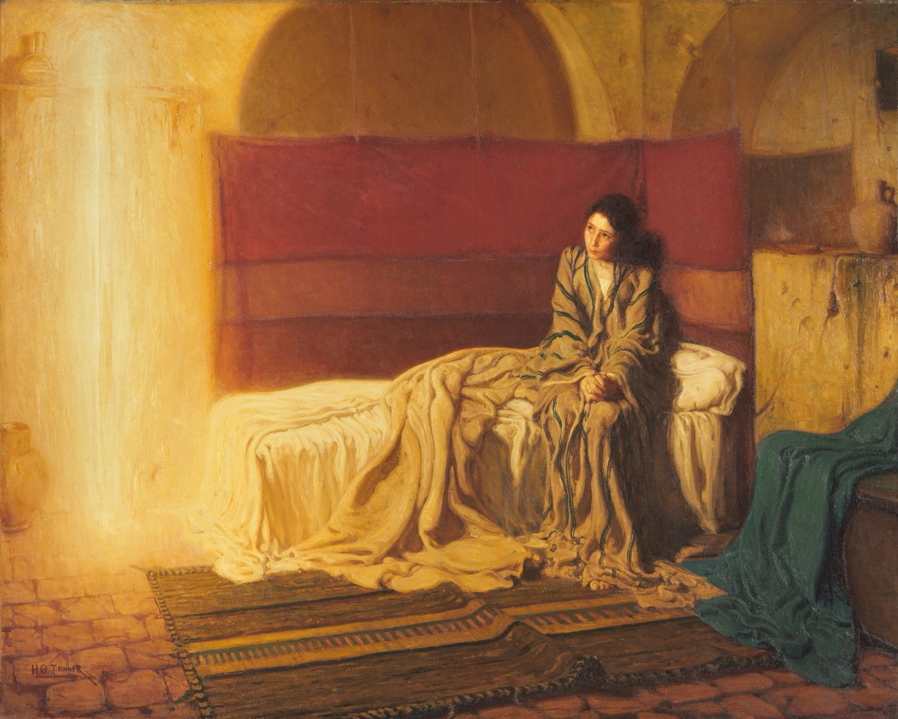
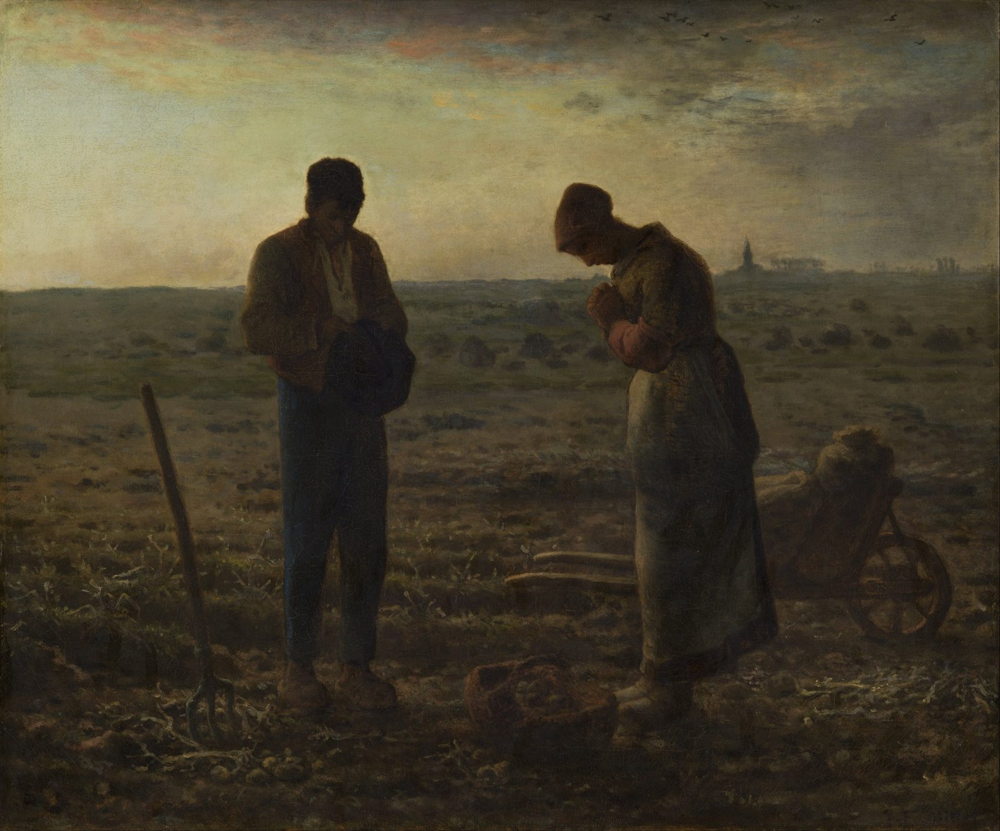
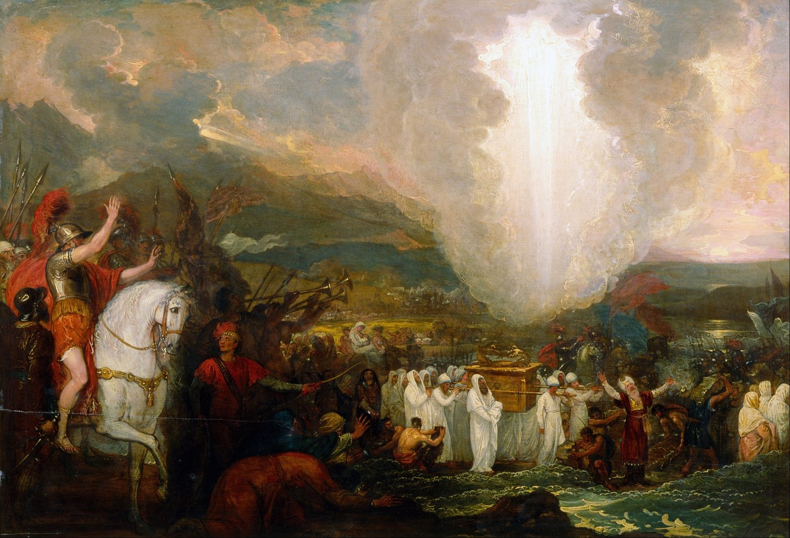

A word
in season
First God wakes your ear. Only then does he give you a word for someone else. This page is about both: staying with what he is saying to you until it becomes part of you, and hearing what he is saying to someone else before you open your mouth.
“The Lord GOD hath given me the tongue of the learned, that I should know how to speak a word in season to him that is weary: he wakeneth morning by morning, he wakeneth mine ear to hear as the learned.”
Isaiah 50:4, King James Version

The short version
Seven sentences. Each one is a section below.
- When a line stands out, stop there. Do not read on to find a better one. Something in you was ready for that line.
- Stay with it for days, not minutes. Say it under your breath. Hold it up against what happens to you. Pray it back.
- A word is yours when it changes what you do without your trying. Until then you are still eating it.
- Words come in seasons. Some are manna for one day. Some go in the jar and are kept.
- The trap: what rings in you will not ring in someone on a different note, however hard you push. And pushing is what it feels like to them.
- Hear their season first. Jesus asked “What things?” before he taught. There are only two voices in someone's hard season, the accuser and the advocate, and you will be amplifying one.
- Testimony is a set of stones for someone else's crossing. Its job is to bring them to hear God themselves, not to make them hear you.
The ear
Isaiah's order is the whole point. The ear is woken before the tongue is given, every morning, and he does the waking. You cannot hand someone a word you have not first received.
What stands out
The two on the road to Emmaus did not know who was talking. Their hearts knew first.
You have had this happen. You are reading, half awake, and one line lifts off the page. It is not always the most important verse in the chapter. Sometimes it is a phrase in the middle of a list. But it lands, and the rest of the chapter goes quiet around it.
The usual response is to note it and keep reading, as if the job were to finish the chapter. This page argues for the opposite. That line is the reading. The rest was the walk to it.
The clearest picture of this in Scripture is two tired disciples walking to Emmaus on the evening of the resurrection. A stranger falls in beside them and opens the Scriptures, Moses and all the prophets, for most of seven miles. They do not recognize him. Then he breaks bread at their table, their eyes are opened, and he is gone. And the first thing they say to each other is not about what they saw. It is about what they felt on the road, before they knew:
“Did not our heart burn within us, while he talked with us by the way, and while he opened to us the scriptures?”
Luke 24:32, KJVThree things in that sentence are worth keeping.
- The burning came before the recognition. They did not have to know it was him for their hearts to answer him. You do not need certainty to stay with a line that is burning.
- They only named it looking back. On the road it was just a conversation that felt unusually alive. Most of us notice resonance late. That is normal, and it is why it pays to stop when something lands, instead of hoping to sort it out later.
- It burned while Scripture was opened. The fire was not a free-floating feeling. It came attached to the text, and the text was about him.
Jesus says his sheep hear his voice (John 10:27). He does not say they hear it perfectly from the start. The boy Samuel heard it three times and ran to the wrong person each time, because he “did not yet know the LORD” (1 Samuel 3:7). It took an old priest to tell him whose voice it was. Recognition is learned, and it is usually learned with help. Part two of this page is about being that help for someone else.
Stop there, and stay
Not ten minutes. As long as the line is still alive.
In 1685 a French widow named Jeanne Guyon published a small book on prayer for ordinary people. Her advice about reading Scripture is one sentence long, and it is the heart of this section: read a little, taste it, and do not move on while the taste is still there.
“…read only a small portion of it, endeavouring to taste and digest it, to extract the essence and substance thereof, and proceed no farther while any savour or relish remains in the passage.”
Jeanne Guyon, A Short and Easy Method of Prayer (1684–85), chapter II, “The Method of Prayer,” public-domain English translation (Christian Classics Ethereal Library)The Inner Room tells her story and has a reader built for her method, one passage at a time. This page picks up where a single sitting ends. What if the line is still alive the next morning? Then you are not done with it. You are camping in it.
Four movements, one line
In the late 1100s, a Carthusian prior named Guigo wrote a short letter describing how monks read. He used eating as his picture, and his four steps still hold up:
- Reading puts the food in your mouth.
- Meditation chews it.
- Prayer tastes it.
- Contemplation is the sweetness itself.
Most of us only do the first one. We swallow whole, then wonder why the meal did nothing.
To murmur, to mutter under the breath. Isaiah uses the same word for a lion growling over its prey while the shepherds shout at it (Isaiah 31:4). It is not emptying your mind. It is saying the line again and again and not letting go of it. The Thread has the full word study.
Mary's way: throw it together with your day
After the shepherds leave, Luke says Mary “kept all these things, and pondered them in her heart” (Luke 2:19). The Greek for pondered, symballousa, means to throw together, to put side by side. That is what camping in a word looks like across a week. You do not just repeat it. You hold it up against each thing that happens, a hard conversation, a bill, a silence, and ask what the line says about that.
Camping is not a method you finish. It ends when the line stops being news and starts being normal. The tool below is a way to stay with one line for a week, one small move a day. It keeps your line on this device only.
Camp in one line
Seven days, one move a daySaved only in this browser, on this device. Nothing is sent anywhere.
Until it becomes you
The prophets were not told to study the scroll. They were told to eat it.
Three times in Scripture someone is handed God's words and told to eat them. Ezekiel is given a scroll and told to fill his belly with it, and it is “as honey for sweetness” in his mouth (Ezekiel 3:1-3). Jeremiah says, “Thy words were found, and I did eat them; and thy word was unto me the joy and rejoicing of mine heart” (Jeremiah 15:16). John on Patmos is handed a little book and told the same thing (Revelation 10:9-10).
Eating is the right picture because of what happens next. You do not keep food. It becomes you. A word that has been eaten is no longer something you quote. It is something you are made of.
The picture also comes with a warning, and both Ezekiel and John got it. The scroll was sweet in the mouth. John's turned bitter in his belly. Ezekiel went away “in bitterness, in the heat of my spirit” (Ezekiel 3:14) and sat stunned for seven days. A word that is going to change you will at some point disagree with you. If you only camp in the sweet part, you have not eaten it yet.
What “becoming the word” can and cannot mean
Only one person is the Word made flesh (John 1:14). Nobody else becomes that, and a page like this should say so plainly. But Paul has a smaller and very real version: “Ye are our epistle written in our hearts, known and read of all men… written not with ink, but with the Spirit of the living God” (2 Corinthians 3:2-3). You become a letter, a place where something he said can be read by people who will never open the book.
James puts the failure just as plainly. The person who hears and does not do is like someone who looks in a mirror, walks away, and forgets what they look like (James 1:23-24). Hearing is not the finish line.
How you can tell it has become real
- It comes back to you on its own, under pressure, before you reach for it. Jesus said the Spirit would bring things to remembrance (John 14:26). That is what it feels like from the inside.
- A reflex has changed. You flinch less, or you answer differently, and you did not decide to.
- You can say it in your own words, and they are short.
- You no longer need anyone else to feel it for it to be true for you.
- You could give it away gently, to the right person, without pressing.
The opposite is collecting. Some of us have notebooks full of lines that stood out, each one dropped for the next. The collection feels like growth and is mostly tourism. One line eaten does more than a hundred admired.
Words have seasons
Some are manna for one morning. Some go in the jar.

“To every thing there is a season” (Ecclesiastes 3:1). That is true of what God says to you as well. The question is not only “what does this verse mean?” It is “why is this the line that stood out now?”
The manna in the wilderness is the clearest lesson in how words keep. It came every morning. Anyone who tried to hoard it found it full of worms by the next day (Exodus 16:19-20). Yesterday's word, held onto out of fear that there will not be another, goes bad. But in the same chapter Moses tells Aaron to put one omer of manna in a jar and keep it before the Lord for the generations to come (Exodus 16:32-34). Most words are for the day. A few are for the jar, to be kept and shown to your children.
Jesus describes growth the same way: “first the blade, then the ear, after that the full corn in the ear” (Mark 4:28). Nobody yells at a blade for not being an ear. Each stage is the right one for its time, and each one needs a different word.
How to read your own season
- Look for the repeat. When the same idea reaches you from three directions in a month, a sermon, a friend, a line in your reading, pay attention. Repetition is the plainest way a season announces itself.
- Notice what it is answering. A word usually lands on a question you are already carrying, even if you have not said it out loud. Name the question and you will understand the season.
- Notice when it goes quiet. A season ends when the word stops being new and starts being normal. That is not loss. That is the word having become you.
- Do not build a whole theology on one season. A word for your wilderness is not a law for everyone else's harvest. That is where part two begins.
Not everything that rings is God
Resonance is a signal. It is not a verdict.
Everything in this half of the page has a shadow side, and it needs naming. A wound resonates too. Bitterness can find verses that seem to light up for it. Fear can make a warning feel like a word from God. A tired mind will hear what it wants to hear. Paul's instruction covers both sides at once: do not quench the Spirit, do not despise prophecy, “prove all things; hold fast that which is good” (1 Thessalonians 5:19-21).
Here is a short test for a line that has landed. None of these is new. They are what the church has used for a long time.
- Where does it lead? Toward Jesus, toward love, toward freedom, or toward fear, superiority and isolation? Ignatius of Loyola, who wrote the classic rules for this in the 1500s, said to watch the whole course of a thought, the beginning, the middle and the end. A thought that starts beautifully and ends with you anxious, proud or cut off was not from where it seemed to be.
- Does it fit the rest of Scripture? A line taken out of its chapter can be made to say anything. Read the chapter around it.
- Has it survived a night's sleep? The Spirit's witness is patient. Panic and ambition are in a hurry.
- Would you make a big decision on it while you are low? Ignatius's best-known rule is to make no changes in a time of desolation. Camp in the line. Act on it later, when you are steady.
- Have you said it to someone who loves you and is free to disagree? Samuel needed Eli. So do you.
The tongue
The word in Isaiah is not for everyone. It is for the weary, and it has to come at the right time. A true word at the wrong time can land as one more weight.
Ringing them at your note
The trap is not sharing what changed you. It is needing it to change them the same way.
Something changed you. A line, a book, a teacher, a season. It is natural to want everyone you love to have it too, and that wish is not wrong. It is where every testimony comes from. The trap is what happens when they do not light up the way you did: the disappointment, the second try, the article forwarded with “you HAVE to read this,” the faint sense that they must not be as hungry as you are.
Here is why it does not work. A string answers a note it is already tuned to, and only that one. Strike a matching note softly across the room and it rings by itself. Strike the wrong one and it barely stirs. You can still make it move. Grab it and shake it at your rate and it will go wherever you push it. But that is not resonance, it is forcing. It takes all your effort, and the moment you let go, what is left rings at the string's own note, not yours.
Try it below. You do not know their note. That is the point.
Ring, or push
A real damped string, not an animationPick a note and sound it once. Watch the second string.
“What is that to thee?”
The last conversation in John's Gospel is about exactly this. Jesus has just restored Peter by the lake, three questions for three denials, and told him how he will die. Peter turns, sees John following, and asks the most human question in the book: “Lord, and what shall this man do?”
“Jesus saith unto him, If I will that he tarry till I come, what is that to thee? follow thou me.”
John 21:22, KJVPeter has just received the most personal word of his life, and his first instinct is to compare it with someone else's. Jesus will not discuss John with him. John has his own road, his own pace and his own ending. The same is true the other way round: the word Jesus gave Peter was not for John.
Paul says the same thing about the church. “If the whole body were an eye, where were the hearing?” (1 Corinthians 12:17). You notice things other people walk past, and they notice things you will never see. That is not a flaw in them. It is how a body works. Even the Gospels are four, not one: the same Jesus, noticed by four different people. Romans 14 lets two believers keep different days, as long as “every man be fully persuaded in his own mind” (Romans 14:5).
So the better question is not “how do I get them to feel what I felt?” It is “what is God already saying to them, and how do I not drown it out?”
Hear their season first
On the road to Emmaus, Jesus knew everything they were about to say. He asked anyway.
Go back to the road. Two disciples are walking, sad, arguing. Jesus joins them and asks what they are talking about. They stop, and one of them, Cleopas, says, in effect, are you the only person in Jerusalem who hasn't heard? And Jesus, who is the news, says: “What things?” (Luke 24:17-19).
He let them tell it their way first: their hope, “we trusted that it had been he which should have redeemed Israel,” and their confusion about the empty tomb. Only after he had heard where they actually were did he open the Scriptures. The burning hearts of section 01 came after a question.
That is his pattern all through the Gospels. He speaks “as they were able to hear it” (Mark 4:33). He tells his own disciples, “I have yet many things to say unto you, but ye cannot bear them now” (John 16:12). He meets the theologian Nicodemus at night with a riddle about being born again (John 3), and the Samaritan woman at noon by asking her for a drink (John 4). Two conversations, two opposite openings, because two different people were in front of him. And the servant in Isaiah 42 is gentle in a specific way: “a bruised reed shall he not break, and the smoking flax shall he not quench” (Isaiah 42:3). Some people are one wrong word from going out.
“…one and the same exhortation does not suit all, inasmuch as neither are all bound together by similarity of character.”
Gregory the Great, The Book of Pastoral Rule (about 590), Book III, prologue, trans. James Barmby (1895)Gregory was bishop of Rome in a time of plague and war, and the third book of his manual for pastors is a long list of opposite kinds of people who need opposite words. The joyful and the sad. The forward and the fainthearted. The impatient and the patient. The whole and the sick. The humble and the haughty. His point is simple and it has lasted fourteen centuries: a word that heals one person will wound the next.
The urge to fix
Counselors have a name for what goes wrong. In motivational interviewing it is called the righting reflex: the strong urge to set someone straight, which tends to make them argue for the very thing you want them to drop. Psychologists who study reactance describe the same thing from the other side: when people feel their freedom is being pushed on, they push back to get it back. Neither finding is about faith, but both describe Proverbs 18:13 well: “He that answereth a matter before he heareth it, it is folly and shame unto him.”
What you are listening for
- What season are they in? Grief, waiting, wilderness, a new start, a fight, a harvest, burnout. Each needs a different word, and some need none for a while.
- What are they actually asking? Not the question you wish they had asked.
- What is God already doing? There is almost always something. Barnabas arrived in Antioch, and before he said anything, he “had seen the grace of God” and was glad (Acts 11:23). Start there.
- What do they believe about themselves, or about God, that is keeping them stuck? That is section 09.
Two voices in a hard season
When you speak into someone's struggle, you join one of them.
The New Testament names two voices that speak about a believer before God. One is “the accuser of our brethren… which accused them before our God day and night” (Revelation 12:10). The Greek word is a courtroom word: the one who brings the charge. The other is the advocate, the paraklētos: “if any man sin, we have an advocate with the Father, Jesus Christ the righteous” (1 John 2:1). Paul puts them face to face: “Who shall lay any thing to the charge of God's elect? It is God that justifieth” (Romans 8:33).
The scene that makes this clearest is in Zechariah 3. Joshua, the high priest, stands before the angel of the Lord in filthy clothes, and Satan stands at his right hand to accuse him. What the accuser says is not false. The clothes really are filthy. But the Lord does not argue the facts. He rebukes the accuser, calls Joshua “a brand plucked out of the fire,” and has the filthy clothes taken off and clean ones put on.
That is the tell. The accuser is often accurate. What gives him away is not what he gets wrong. It is what he wants done with what he gets right. He wants a verdict. God wants a change of clothes.
Job's three friends are the warning for the rest of us. Much of what they said was standard, sound theology. They sat with Job in silence for seven days, which was the best thing they did. Then they started explaining his suffering to him. At the end of the book God says to them, “ye have not spoken of me the thing that is right, as my servant Job hath” (Job 42:7). Right doctrine, wrong season, and on the wrong side.
The accuser's sentences
- “You always do this.”
- “You should be further along by now.”
- “If you really had faith, this would be over.”
- “After everything, you'd think you would know better.”
- “Maybe there's something in your life God is dealing with.”
The advocate's sentences
- “This isn't the end of your story.”
- “He hasn't let go of you.”
- “I've watched you come through hard things before.”
- “What do you think he thinks of you right now?”
- “Can I tell you what he did for me?”
A good question to ask yourself before you speak: if they heard only this sentence and nothing else from me, whose voice would it sound like?
The lie under the struggle
Most people who are stuck are not missing information. They believe one sentence about themselves or about God that isn't true.
God's first question to a human being who had fallen was not about the fruit. It was “Who told thee that thou wast naked?” (Genesis 3:11). He went after where the sentence came from. That is still the best question in a hard conversation, and it is why this section starts each lie with a question to ask, not a thing to say.
These seven come up again and again. Tap one to open it. Each has the accuser's version of “help,” which is what to avoid, a word that often fits that season, and a testimony from Scripture to tell. You will have your own testimonies too, and they will usually be better than these.
Stones for someone else's crossing
A testimony is not an argument. It is evidence that a river was crossed, left where the next person can see it.

When Israel crossed the Jordan, Joshua had one man from each tribe pick up a stone from the middle of the riverbed and carry it to the other side. The reason he gave was a question their children would ask years later: “What mean ye by these stones?” (Joshua 4:6). The answer was a story. The water stopped, and we walked across.
That is what a testimony is for. It is not you proving a point. It is a pile of stones on the far bank of a river someone else is standing in front of. It tells them the crossing is possible, because someone did it.
The best verse on testimony is about its limit
The Samaritan woman runs back to her town after talking with Jesus and says, “Come, see a man, which told me all things that ever I did” (John 4:29). Many believed “for the saying of the woman, which testified” (John 4:39). Her testimony worked. But then they meet him for themselves, and they say this to her:
“Now we believe, not because of thy saying: for we have heard him ourselves, and know that this is indeed the Christ, the Saviour of the world.”
John 4:42, KJVThat is the goal, and it is the answer to the trap in section 06. A good testimony does not make people resonate with you. It brings them close enough to hear him, and then you are no longer needed. If your name shows up in their story more than his does, something went wrong.
Why testimony works when arguments don't
Revelation says the saints overcame the accuser “by the blood of the Lamb, and by the word of their testimony” (Revelation 12:11). An accusation is a claim about what you are. A testimony is evidence about what God does. You cannot argue someone out of a lie they have believed for years, but you can put a story next to it that does not fit. The lie has to explain the story, and often it can't.
Revelation also says that “the testimony of Jesus is the spirit of prophecy” (Revelation 19:10). Some teachers read that as: when you tell what Jesus did, you are prophesying that he can do it again for the person listening. It is a fair application. It is not the only reading of a hard verse, and the Hebrew claim often attached to it is weaker than it sounds (see the note).
A few rules for a testimony
- True, and not improved. A testimony that has been polished stops being evidence. Tell it the size it was.
- Short. One story, not your whole life.
- About him. What he did, not how faithful you were.
- Matched to their river. Your story about provision will not help someone who is grieving. Pick the stone from the river they are standing in.
- Offered, then left. Put it down and step back. They will pick it up when they are ready.
A word in season, in practice
“A word spoken in due season, how good is it!” (Proverbs 15:23)
Listen to the end
Let them finish, then wait a moment longer. “Swift to hear, slow to speak” (James 1:19). Answering before hearing is folly (Proverbs 18:13).
Ask “what things?”
One real question about where they are. Let them tell it their way, as the two on the road did.
Pray under your breath
While they talk: “What are you saying to them?” Nehemiah prayed between the king's question and his own answer (Nehemiah 2:4-5).
Name what God is doing
Look for the grace first, as Barnabas did (Acts 11:23). Say what you see him doing in them before anything else.
Offer one small thing
One verse, or one story, matched to their river. Ask first: “Can I tell you something that helped me?”
Hand it over, and come back
Leave it with them and with God. You planted. Someone else may water (1 Corinthians 3:6). Check on them next week.
And sometimes, for a while, the word in season is no words at all. Job's friends got one thing right, and it was the week they kept quiet.
Morning by morning, the ear first.
Isaiah's servant does not get the tongue and then go looking for ears to fill. He is woken, every morning, and taught, and only then does he have something for the weary. It is the same for us. The word you give someone else is only as true as the word you have eaten yourself. And the word you have eaten yourself is only finished when you can hold it out to someone else without needing them to take it.
“The Lord GOD hath opened mine ear, and I was not rebellious, neither turned away back.”
Isaiah 50:5, KJVWhere this could be wrong
The strongest objections, stated fairly.
“Stands out” can make feelings the authority
If the measure of Scripture is what lights up for me, I will end up with a Bible of my favorite verses. The answer this page gives is section 05: resonance tells you where to stay, not what is true. The text, the whole of Scripture and the church around you decide that.
Guyon was condemned for a reason
Her later teaching drifted toward Quietism, a passivity that let go even of wanting to be saved. Wesley admired her and still warned readers. This page borrows only her advice on slow reading, which almost no one has objected to. The Inner Room sets out what it takes and what it leaves.
“Their season” can become an excuse to never say a hard thing
It can. Nathan did not wait for David to be in a receptive season. The guard against that is the aim of the word, restoration, not the comfort of the speaker. Sometimes the season is exactly the one that needs a hard word, said once, with love, and then left.
Testimonies can be exaggerated, or used as pressure
“It worked for me, so it will work for you” is the trap of section 06 in testimony's clothes. A testimony is evidence of what God did once, not a promise about what he will do next, in the same way, for this person. Tell it the size it was.
Reading someone's lie can become amateur diagnosis
Deciding what someone else believes about themselves is presumptuous if you do it from the outside. That is why every lie in section 09 begins with a question. Ask. Then listen to the answer. Serious wounds need more than a friend's verse, and sometimes the best word is the name of a good counselor.
The research is borrowed, and loosely
The righting reflex and reactance come from counseling and social psychology, not from studies of believers. They are used here as illustrations of Proverbs 18:13, not as proof of it.
What this page stands on
Verses written out are from the King James Version, which is in the public domain. Tap any reference to read it in another translation.